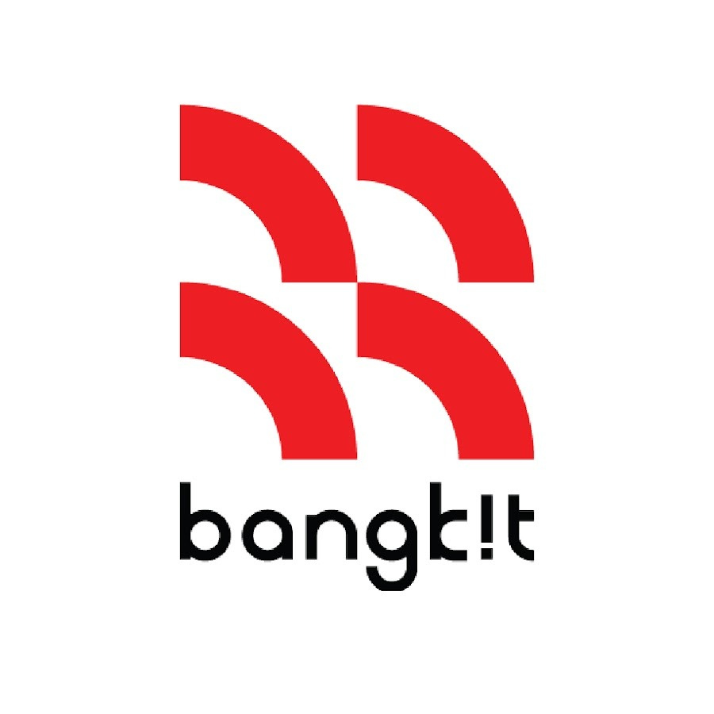
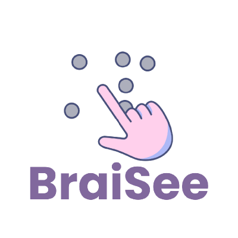

Fresh Graduate Teknik Informatika (IPK 3.45/4.00) dari STMIK IKMI Cirebon. Memiliki pengalaman praktis dalam Cloud Computing & DevOps melalui program Bangkit Academy (Google, GoTo, Traveloka).
Saya adalah lulusan Teknik Informatika dari STMIK IKMI Cirebon (2022 - 2026) dengan spesialisasi di bidang **Cloud Computing** dan **DevOps**. Saya memiliki hasrat tinggi untuk merancang, mendeploy, dan memelihara aplikasi berskala besar pada infrastruktur cloud.
Melalui program intensif **Bangkit Academy** (angkatan 2024/2025), saya mendalami ekosistem **Google Cloud Platform (GCP)**, orkestrasi kontainer menggunakan **Docker**, serta otomatisasi **CI/CD** menggunakan **GitHub Actions** dan **Jenkins**.
Saya adalah individu yang kolaboratif, mudah beradaptasi, dan sangat antusias untuk menerapkan keahlian teknis saya pada lingkungan industri nyata guna memecahkan tantangan infrastruktur yang dinamis.

Menyelesaikan 900+ jam pelatihan terstruktur mengenai layanan Google Cloud Platform, arsitektur cloud-native, dan metodologi DevOps.

Merancang dan membangun arsitektur backend cloud untuk aplikasi Braisee yang mengintegrasikan model machine learning dengan antarmuka mobile.
Menyelesaikan penelitian tugas akhir sarjana informatika bernilai 6 SKS (Grade B) dengan studi literature review terstruktur (Grade A/B) dan metode penelitian terstandarisasi (Grade A).
Metodologi & Studi LiteraturMerancang arsitektur jaringan kantor tingkat lanjut (Jaringan Expert - Grade A) terintegrasi dengan otomatisasi sensor cerdas berbasis Internet of Things (Grade B).
Infrastruktur & IoTVisualisasi dan filter mata kuliah inti yang telah ditempuh selama studi di STMIK IKMI Cirebon.
Cloud Computing Cohort — 2025
Sertifikat kelulusan program pelatihan intensif selama 900+ jam mencakup materi Google Cloud Platform, DevOps, otomatisasi CI/CD, dan deployment aplikasi ML menggunakan FastAPI & Cloud Run.
Google Cloud Platform — 2024
Penyelesaian berbagai hands-on labs & quests untuk layanan GCP seperti Compute Engine, Cloud Run, Cloud Build, IAM, dan praktek keamanan cloud.
Saya selalu terbuka untuk berdiskusi tentang peluang karir di bidang Cloud Engineering, DevOps, proyek kolaboratif, atau sekadar bertukar pikiran mengenai teknologi.
nendaseputra@gmail.com
+62 896 8951 6416
Ciledug, Cirebon, Jawa Barat, Indonesia